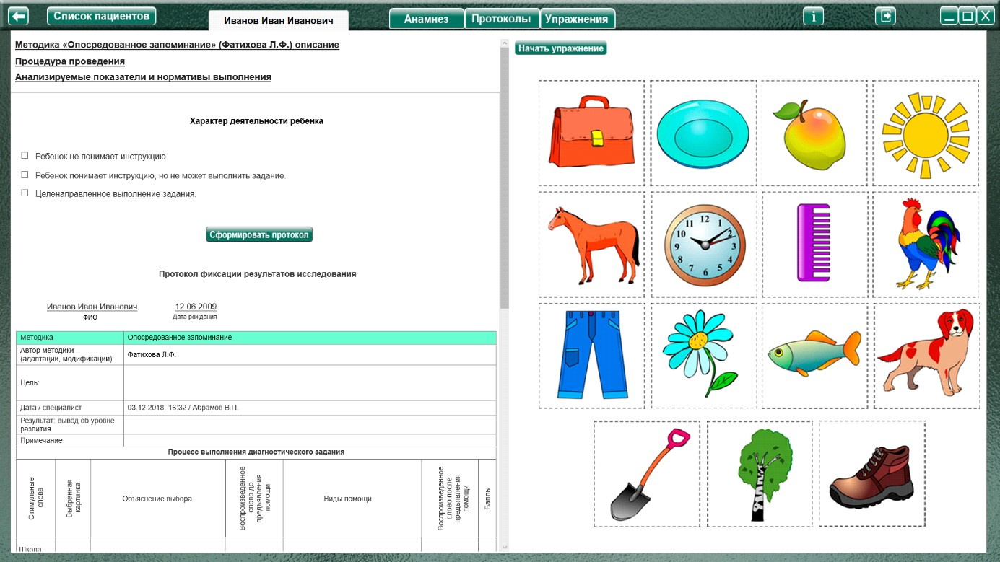
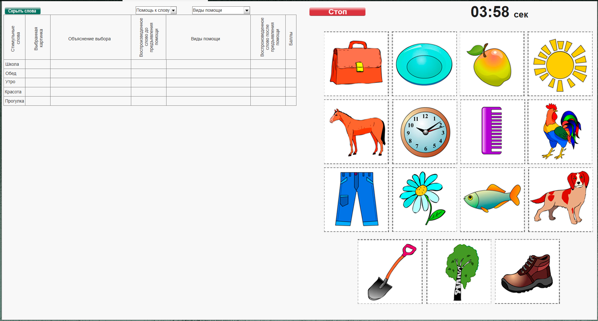
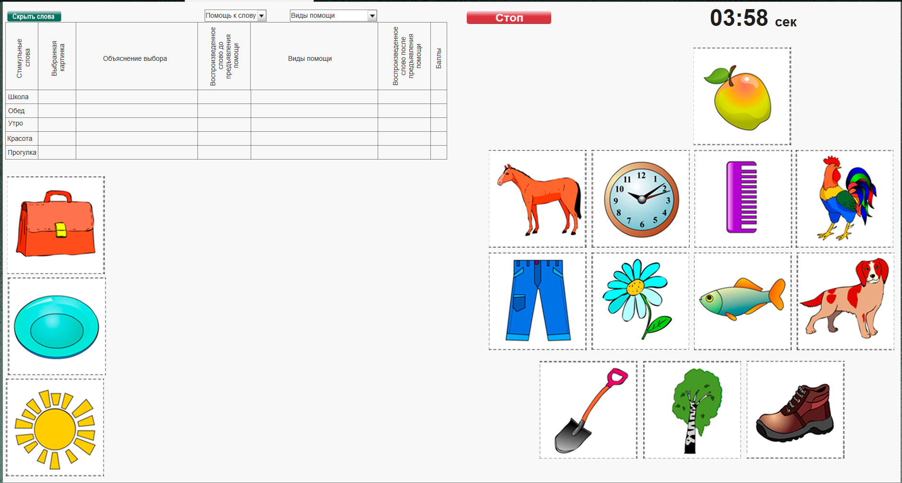
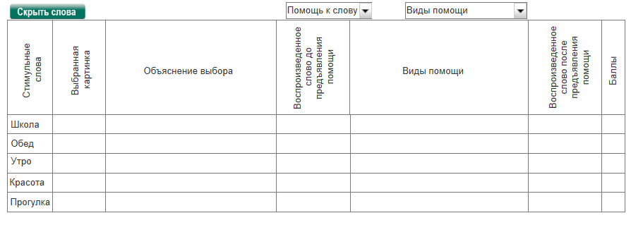
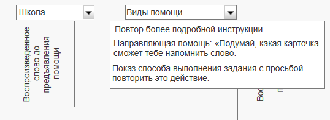

Методика «Опосредованное запоминание» (Фатихова Л.Ф.)
Методика «Опосредованное запоминание» (Фатихова Л.Ф.) описание
Процедура проведения.
Уточнить, знакомы ли ребенку наиболее трудные карточки. Затем дать инструкцию:
«Сейчас ты будешь запоминать слова. Я буду говорить тебе слово, а ты, чтобы легче было его запомнить, будешь выбирать какую-нибудь картинку, но такую, которая поможет тебе вспомнить это слово. Я тебе буду говорить слова, а здесь можно найти такую картинку, которая сможет напомнить тебе это слово».
Первым предъявляется слово «школа».
Затем последовательно предъявляются следующие слова. На выбор карточки отводится до одной минуты. Если за это время выбор не произведен, то ребенку предъявляются те же виды помощи, что и при слове «школа».
После выбора каждой карточки необходимо спрашивать ребенка объяснение связи: «Как тебе эта карточка напоминает про слово…?».
По окончании выбора карточек к каждому слову экспериментатор просит ребенка рассмотреть карточки и назвать слова, которые он запомнил.
Анализируемые показатели и нормативы выполнения
За каждое правильно воспроизведенное слово при самостоятельном выборе карточки начисляется по 2 балла. Таким образом, максимальная оценка за выполнение задания – 10 баллов.
Каждый вид помощи уменьшает оценку за воспроизведенное слово на 0,5 балла. Если все предъявленные виды помощи не повлияли на результат выполнения задания, оценка – 0 баллов.
Анализ результатов
Группы детей |
Возраст |
Баллы |
Нормально развивающиеся дети. |
Дошкольный |
6-10 |
Младший школьный |
8-10 |
|
Дети с задержкой психического развития. |
Дошкольный |
4-6 |
Младший школьный |
6-10 |
|
Дети с умственной отсталостью. |
Дошкольный |
0-2 |
Младший школьный |
4-7 |
Нормально развивающиеся дети как дошкольного, так и младшего школьного возраста способны к адекватному выбору картинок, опосредующих запоминание слов, к соответствующему
объяснению сделанного выбора и к точному воспроизведению слов.
Дети с ЗПР в целом способны к установлению адекватных связей между картинкой и запоминаемым словом, однако у дошкольников с ЗПР наряду с адекватными связями наблюдается и
неадекватные – внешне адекватный выбор картинки к запоминаемому слову сопровождается несоответствующим объяснением связи между картинкой и словом. Соответствующие объяснения наблюдаются в случае обоснования связи между картинкой и словом бытового содержания (обед – тарелка, прогулка – ботинок, школа – портфель), абстрактные понятия (утро, красота) обрабатываются труднее. У дошкольников с ЗПР резко падает продуктивность деятельности к
концу выполнения задания: первые 2-3 слова воспроизводятся, как правило, точно, а последние – неточно. Дошкольники с ЗПР, в отличие от младших школьников с ЗПР, при налаживании связей
между картинкой и словом и обоснованием данной связи не всегда могут использовать эту связь при воспроизведении: наблюдается неправильное или неточное воспроизведение – подбор близкого по смыслу слова (обед – кушать) или изменение формы слова (прогулка – гулять).
Для детей с умственной отсталостью в целом не характерна способность к налаживанию адекватных связей между картинкой и запоминаемым словом. Чаще всего они не способны самостоятельно подобрать соответствующую картинку к слову (выбор приходится делать психологу) и, тем более, обосновать связь картинки и слова. Воспроизведение слов также носит непродуктивный характер: вместо воспроизведения слов дети обычно просто называют картинки,
которые были ранее выбраны с помощью психолога.
Оценка результатов
Характер деятельности ребенка:
Протокол фиксации результатов исследования
_________________________________ _______________
ФИО Дата рождения
Методика |
Опосредованное запоминание |
|||||||
Автор методики (адаптации, модификации) |
Фатихова Л.Ф. |
|||||||
Цель: |
выявить уровень развития опосредованной памяти; изучить особенности мышления, способности к речевому опосредованию познавательной задачи. |
|||||||
Дата / специалист |
||||||||
Результат: баллы (макс.) / вывод об уровне развития |
||||||||
Примечание |
||||||||
Процесс выполнения диагностического задания
|
||||||||
Характер деятельности ребенка |
||||||||
Стимульные слова |
Выбранная картинка |
Объяснение выбора |
Воспроизведенное слово до предъявления помощи |
Виды помощи |
Воспроизведенное слово после предъявления помощи |
Баллы |
||
Школа |
||||||||
Обед |
||||||||
Утро |
||||||||
Красота |
||||||||
Прогулка |
||||||||
Итоговая оценка |
||||||||
Логика заполнения протокола
Заполняется автоматически
Имя специалиста – логин при входе в программу.
Дата –дата и время прохождения упражнения в формате дд.мм.гггг.
Результат: баллы (макс.) / итоговая сумма балов за все задания (Макс. 10 баллов).
«Характер деятельности ребенка», «Виды помощи» заполняются в зависимости от выбора специалиста в поле «Оценка результатов» либо самостоятельно.
Остальные ячейки заполняются специалистом самостоятельно.
Описание элементов управления.
Кнопка «Показать / Скрыть слова»
Для отображения / скрытия слов для запоминания, а так же объяснений ребенка, как карточка поможет ему запомнить слово.
Логика выполнения упражнения

Нажать кнопку «Начать упражнение», закрывая область оценки результата и открывая задание на весь экран.

Выполнить задание согласно пункту «Процедура проведения». Выбранные картинки «отложить» путем перетаскивания мышкой с зажатой левой кнопкой.

Ответы ребенка записываются непосредственно в протокол на странице выполнения.

При необходимости добавить виды помощи, нажать на выпадающее меню «Помощь к слову», выбрать слово, при работе с которым необходимо добавить виды помощи (например, «Школа»), затем нажать на меню «Виды помощи» и выбрать необходимый пункт. При нажатии на нужный пункт, он автоматически добавиться в колонку «Виды помощи», в строку к слову «Школа». По условиям задания при выставлении оценки (за каждое правильно воспроизведенное слово при самостоятельном выборе карточки начисляется по 2 балла) учесть, что за каждый вид помощи нужно снизить оценку на 0,5 балла. При внесении не целого количества баллов, для разделения целого и десятичного значения использовать запятую. Например: 1,5

Специалист так же может заполнить виды помощи самостоятельно, поставив курсор в нужную ячейку, и набрать нужный текст с клавиатуры. По окончании задания нажать кнопку «Стоп», открывая поле оценки результата. При необходимости выбрать характер деятельности и нажать кнопку «Сформировать протокол». Произвести оценку результата (заполнить оставшиеся ячейки протокола) согласно пункту «Анализируемые показатели и нормативы выполнения».